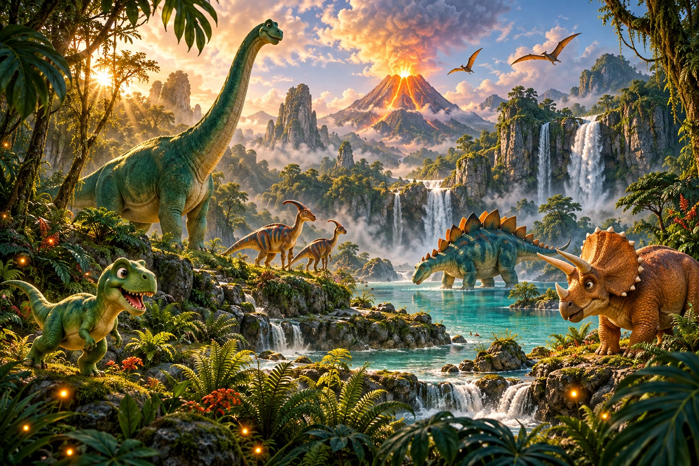

ACCESO A LA EXPEDICIÓN
- FECHA
- HORARIO
- BASE DE OPERACIONES
Cómo llegar ↗Dirección por confirmar
Lucas cumple 6 años.
Y te necesita en su equipo de exploradores.
Toca las huellas para conocer a sus habitantes.
EN VIVO EN TU IMAGINACIÓN
Seis personajes, seis pequeñas misiones.
Descubre cuál será tu compañero de expedición.
Los dinosaurios ya están listos. Solo falta que anotes la fecha y prepares tus ganas de jugar.
Prepara tus mejores pasos de dinosaurio.
Cada parada tiene una sorpresa.
¡Vamos a descubrirlas!
Me encanta imaginar grandes aventuras.
¡Este año quiero vivir una contigo!
Niño ficticio · Fotografías de ejemplo generadas con IA. Toca para ampliarlas.
Ropa cómoda, tenis y muchas ganas de jugar.
Los niños deben ir acompañados de un adulto durante toda la fiesta.
Avísanos de alergias alimentarias al confirmar.
Confirma antes del . Necesitamos saber cuántos exploradores se suman a esta gran aventura.